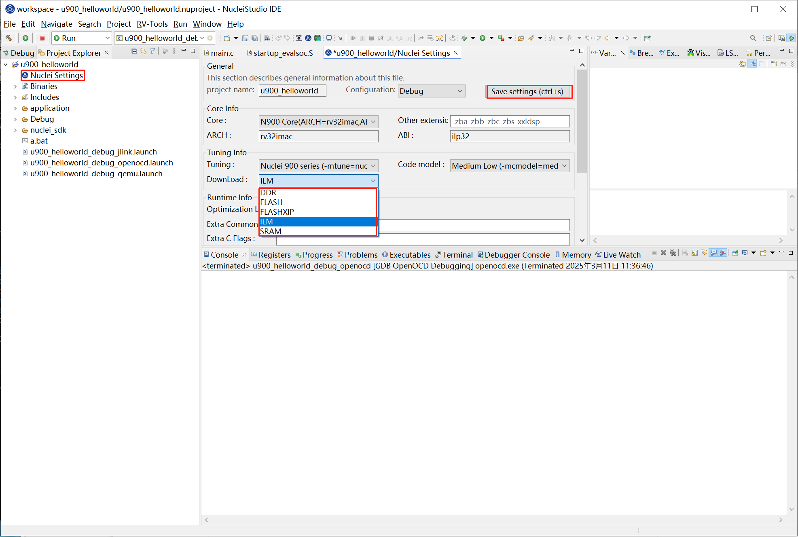

Flash Programming使用案例¶
为了满足用户将编译好的二进制文件直接下载到硬件开发板的需求，Nuclei Studio 提供了 Flash Programming 功能。该功能允许用户快速、便捷地将编译好的二进制文件直接下载到硬件开发板中，极大提升了开发和调试的效率。用户只需点击一次即可完成二进制文件的下载，简化了操作流程。
解决方案¶
环境准备¶
Nuclei Studio：
要求版本 >= 202412，下面提供202502版本。
Flash Programming 使用演示¶
step1：创建项目，烧写bit
使用0.7.1版本的sdk-nuclei_sdk创建一个u900的helloworld项目，依次选择Simple Helloworld Demo,FLASH下载模式和U900 Core，点击Finsh。

开发板烧写对应的bit即可，这里我们使用trace-u900_best_config_ku060_16M_e85631d489_e82e2771f_202409232110_v3.12.0.bit
step2：配置编译 Nuclei SDK 原始工程
编译原始工程，确保编译成功以及在 Debug 下可以找到生成的 elf 文件：

step3：配置Flash Programming选项卡
在Launch Configuration 选中对应调试选项(openocd)，点击edit打开配置页面。

选择 Flash Programming 选项卡，进入配置页面。
由于是Flash下载模式，这里默认选择的verify image和reset and run即可。

具体配置项内容可参考Nuclei Development Tool Guide
step4：下载
选中项目，点击Flash Programming，下载二进制文件到硬件开发板。

下载成功后，用户可以在 Console 中看到下载结果，确认二进制文件已成功烧录到硬件中。
** Programming Started **
Info : Padding image section 1 at 0x200029c4 with 4 bytes
** Programming Finished **
** Verify Started **
Warn : [riscv.cpu] Re-reading memory from addresses 0x20000004 and 0x20000008.
Warn : [riscv.cpu] Re-reading memory from addresses 0x20000010 and 0x20000014.
** Verified OK **
** Resetting Target **
Info : JTAG tap: riscv.cpu tap/device found: 0x10900a6d (mfg: 0x536 (Nuclei System Technology Co Ltd), part: 0x0900, ver: 0x1)
Info : [riscv.cpu] Register fp is dirty!
Info : [riscv.cpu] Register s1 is dirty!
Info : [riscv.cpu] Register a0 is dirty!
Info : [riscv.cpu] Register a1 is dirty!
Info : [riscv.cpu] Discarding values of dirty registers.
shutdown command invoked


step5：下载到内存的区别
Nuclei Studio有DDR、FLASH、FLASHXIP、ILM、SRAM多种下载模式。
FLASH、FLASHXIP模式按上面的步骤使用即可，而DDR、ILM、SRAM是下载到内存中的与Flash有所区别，下面以ILM为例。
点击Nulcei Settings打开页面，在Download中选择ILM并保存。

重新编译项目，clean project -> build project
然后打开对应的.map文件，这里是u900_helloworld.map，在里面找到起始加载地址，如下图的0x80000000

打开Flash Programming选项卡，因为是下载到内存，这里要勾选Load in Ram,此时下面的command line会增加load_image命令，
再在Program Address中填入上面获取到的地址0x80000000,command line会带上 resume 0x80000000参数。
点击OK。

选中项目，点击Flash Programming下载。结果如下。
Info : Valid NUSPI on device Nuclei SoC SPI Flash at address 0x20000000 with spictrl regbase at 0x10014000
Info : Nuclei SPI controller version 0xee010102
Info : Found flash device 'win w25q256fv/jv' (ID 0x001940ef)
semihosting is enabled
Start to program Debug/u900_helloworld.elf to 0x80000000
10680 bytes written at address 0x80000000
1344 bytes written at address 0x90000000
downloaded 12024 bytes in 0.263079s (44.634 KiB/s)
verified 12024 bytes in 0.317004s (37.041 KiB/s)
shutdown command invoked

step6：可能出现的问题
- Error: checksum mismatch , attempting binary compare
出现这个错误是因为flash下载和ram下载搞错了，需要在nuclei settings里面进行修改Download模式。
总结¶
Flash Programming 功能为用户提供了一种快速、便捷的方式将编译好的二进制文件下载到硬件开发板中。通过简单的配置，用户可以轻松适配不同的硬件环境，并确保二进制文件的正确烧录。